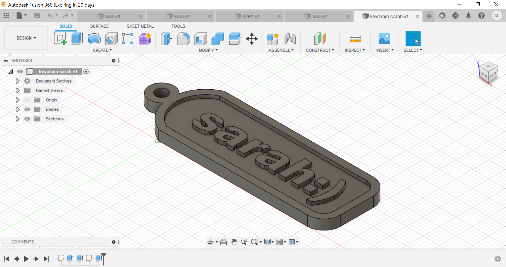
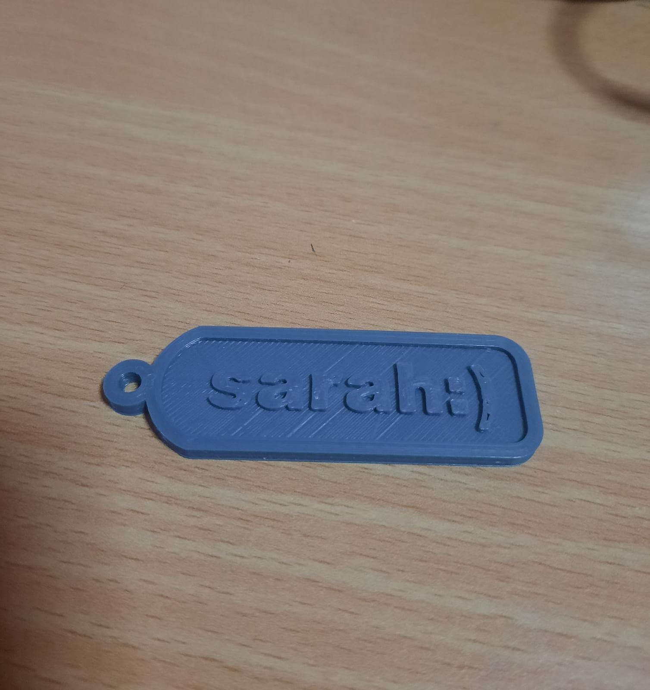
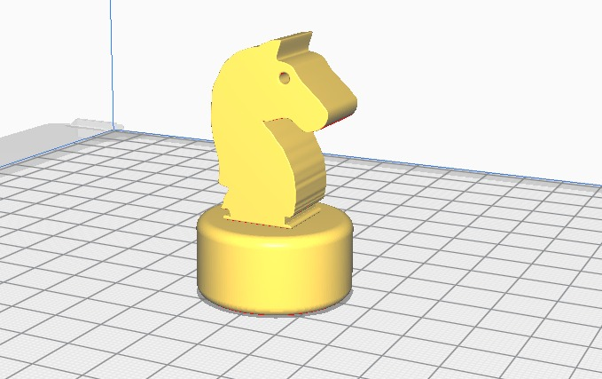
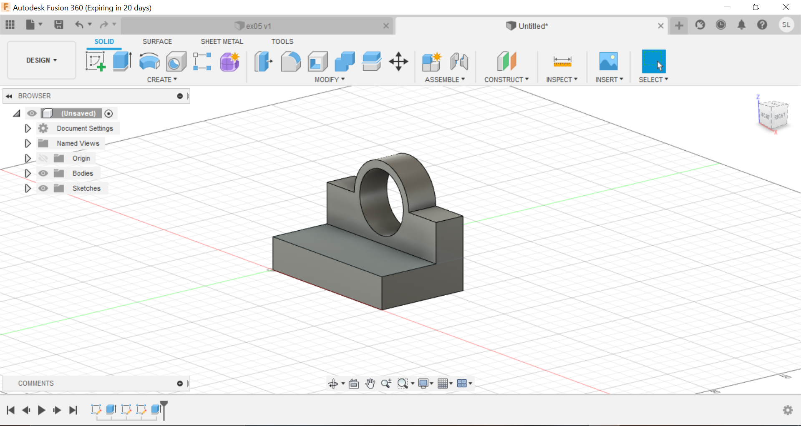
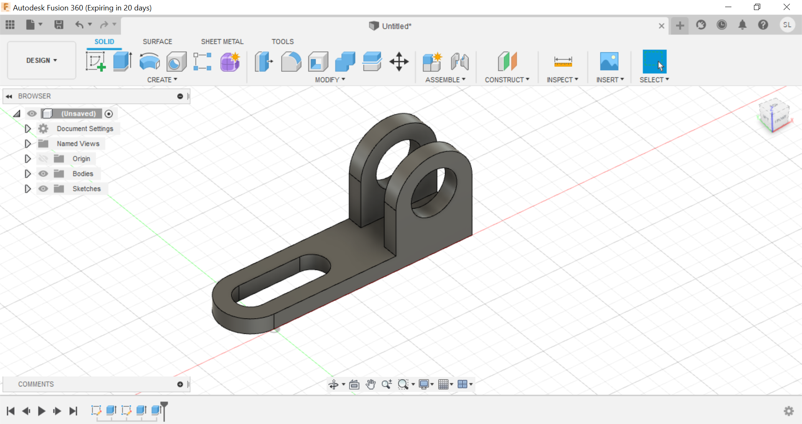
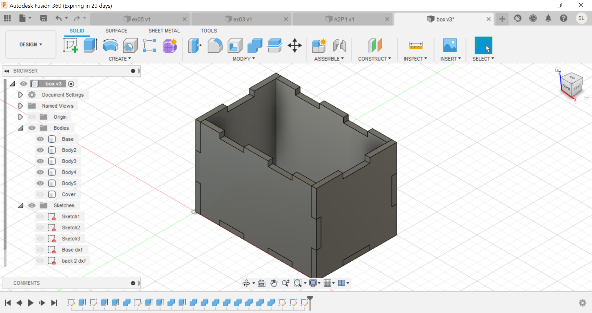
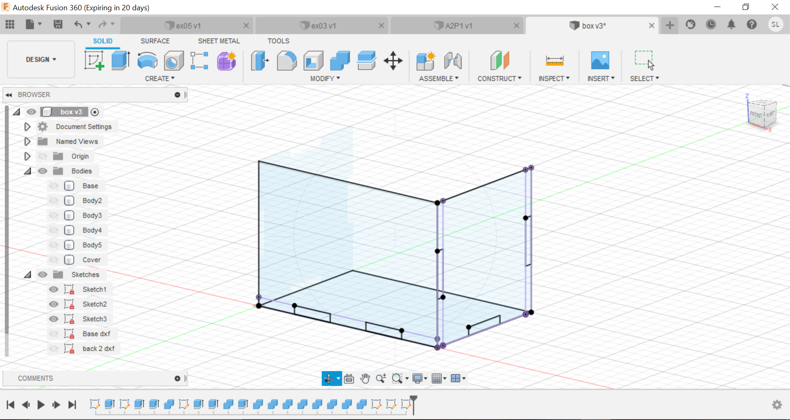
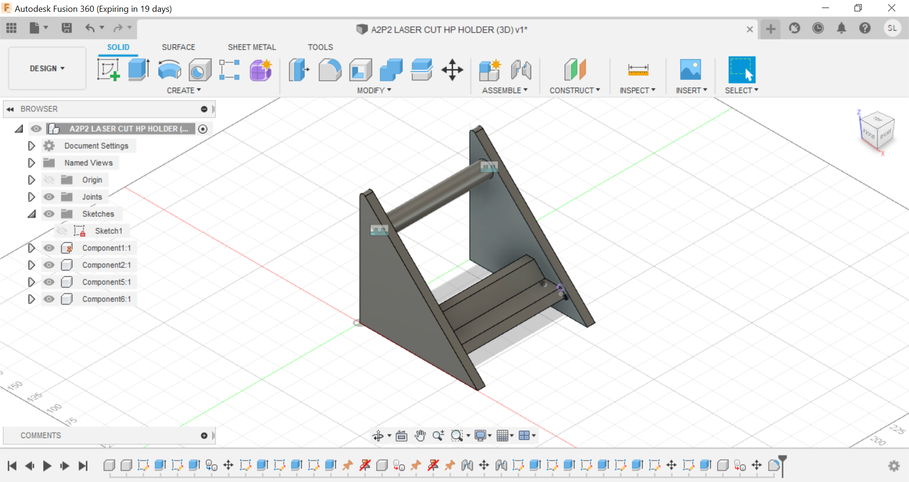
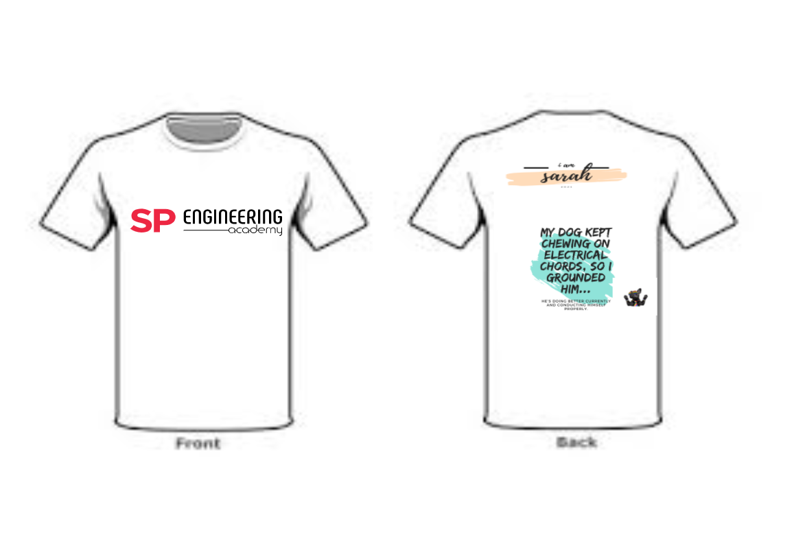
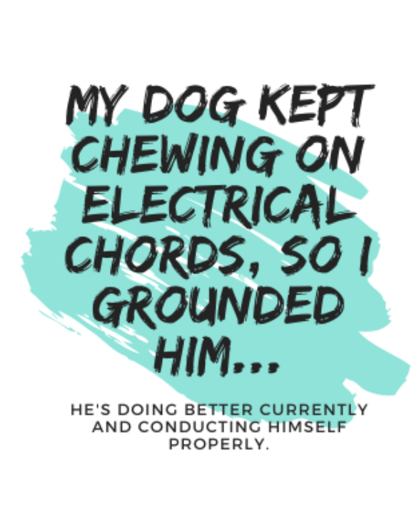

29th march
The lecturer said "If you didn't document it, it didn't happen". This got me thinking about about how many things I 'didn't' document.
He walked us through the reasons why we should document our lives and gave us different kinds of documentation techniques. After that, he introduced HTML to us. It is a language of the WWW which we will be using to write the contenets in our website. We then started going through the steps on how to start up our own website. First off, we created our own github account. Before we could display anything, we obviously had to make the content. So we had 4 choices on which app we wanted to download to write our content and I chose sublime text 3.
The teacher demostrated and showed us how we are about to 'upload' our website onto WWW. After that, we were given an assignment to complete ourselves. We had to write up 3 pages, home page, project page and about page. After creating my 3 pages, I used CSS to format the display nicely onto the website.
After lunch break
We started on 3D drawing. The lecturer asked us to download the fusion 360 autodesk app. For me, since I am an EEE student, I have learnt how to draw on this app before. We drew a 3D keychain with our names on it and then 3D printer it afterwards.
3D printing
 We were then tasked to complete somemore 3D drawings at home. These are the other designs
A chess piece in the Ultimaker Cura app
Other 3D designs:
 Ive learrnt how to use many functions in there like for example:
Extrude function- making shapes/sketches into 3D shapes Combine function-making 2 pieces join
30th march
On the second day, the lecturer thought us about 2D drawings. We used the same app, fusion 360 autodesk to draw them. We started by drawing a box. Not just a normal 3D box. We had to draw each sides individually. It was a bit confusing at the start but after that, I got a hold of it. Not going to lie, I still need to practice drawing 2D drawingg.
Laser Cutting
We used the autodesk fusion 360 app to design a box. Then saved and copied the sketches onto the picpick app so that we can laser cut after that.
 Phone stand design
After lunch break
After lunch, the lecturer taught us different ways on how we can print on t-shirts. For example, screen printing(for silkscreen printing), heat transfer(laser/inkjet), vinyl heat transfer(putting cloth on top of the design then start ironing), stencilling, embroidery and dye sublimation. We used dye sublimation to print on our shirts.
T-shirt design
I used pinterest to look for different design as examples and then paste my ideas on the inkscape app. After that, I saved my file as .svg and used a technique called dye sublimation to print my design on my shirt. This is how the machine looks like

Front and back of my shirt:
I decided to put a little joke behind so that it would be a little more interesting.
